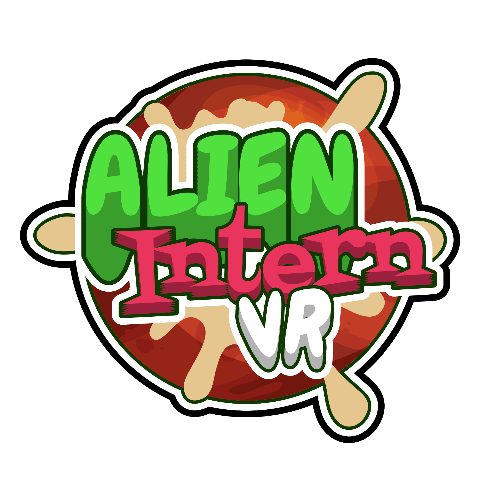

Trailer
Summary
- Alien Intern VR is a comedy/job simulator game built on the foundation of many different minigames called Modules, where the player has to get an internship (in VR) to get rid of their annoying roommate, Greg. The player has to complete these modules without fail to complete up to three hand-crafted days. And what if they fail? Well then they EXPLODE!
| Purpose | Duration | Responsibilities | Platform | Engine |
|---|---|---|---|---|
| Student Project 2 @Playgroundsquad | 9 Weeks | Project Management, Voicelines, UI & UX | PlaystationVR 2 | Unreal Engine 5 |
Contribution & Reflection
- • UI
- • Project Management
- • Accesibility & UX
- • Implementation of Audio

In Alien Intern VR I was dubbed Lead Designer & responsible for the project management, UI & UX.
My work lead to the
easy-to-use diegetic UI, a Roadmap for the project, and my work was very much specialized
towards making the VR
experience as pleasant as possible as it is known to be difficult with motion sickness for
certain people.
As a group our biggest goal outside of making an enjoyable game was to hit the 120FPS (with
no re-projection) mark. This meant that everything from models, to systems and even rendering
was tampered with and optimized. The game features a custom shadowcapture and rendering, all
materials are unlit and the draw time is consistently good making the game run really smooth
on the hardware and could possibly be ported to other VR-devices if the PS5 Exclusive features
are altered (which most of them already have support for).
UI
Working with the restriction of VR and motion sickness we had to think outside the box. All menus in the game are diegetic in one way or another. With the Title Screen being a giant floating billbooard in space, the In-Game menu being situated on a watch on the player's wrist and everything else being an in-world object.
Project Management
The organization of Alien Intern was mostly done by me. This was done via Milanote for keeping tasklists, for the project as a whole, individual disciplines and then individual people. Artists used a Miro.com board to keep a comprehensive moodboard and we as a whole had a physical SCRUM-board with post-it notes to have a real-world representation of what was going on. I was able to present all our sprints successfully with progress, planning and gameplay. As we also were working with an external sound team for this project it meant an extra line of communication I managed. Together Trolley Problem Productions made (in my honest and unbiased opinion) an awesome product.
Accesibility and UX
As we had quite a few in our group who early on expressed their displeasure with playing VR as they were easily affected by motion sickness we set out to mitigate it with any and all tricks we could find in our resources. This started during pre-production with scale testing as we had read about how bad scale can induce illness. Later throughout the project it was everything from how the player moves, to smoothing the spectator camera and making sure that collisions worked properly. The end result was a lot of happy playtesters who almost in unison said that the game felt good to play from a motion sickness perspective and that our work and research had paid off.
Implementation of Audio
Being the one in closest contact with the audio engineers I was tasked with setting up the audio hierachy and systems within our project. This took a lot of effort, everything from recording voicelines, making sure they got processed correctly, implementing them into the game and organizing the hierachy of sound classes, mixers and attenuation was quite the task for someone who had previously voided audio like the plague, but now I feel like I have a decent grasp on the basics and I am proud with how well it turned out in the end of the project. I don't think I will ever record an important voiceline again however.
Miscellaneous
Other than the aforementioned I was also tasked with implementing stray systems in blueprint scripting such as our mouth envelope-to-mouth-texture-change, the bouncing when certain characters talk and the audio tutorials for the game.
Credits
| Art | Audio | Design | Programming |
|---|---|---|---|
| Daniel Edström | Anastasia Andersson | Alva Sörman | André Valand |
| Emelie Almroth | Max Ignatius | Calle Wahlstedt Nilsson | Anton Winqvist |
| Jonatan Weddfelt | Pauline Karlsson | George Ross | Isabella Norström |
| Markus Skoog | Hari Murali | Linus Lekselius | |
| Mikaela Eriksson | Viktor Thoors | ||
| Victor Fröjd | |||
| Yiqun Libertson |